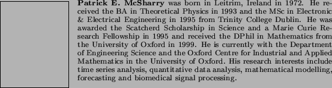
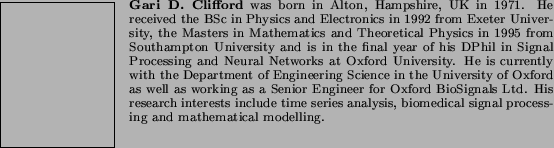
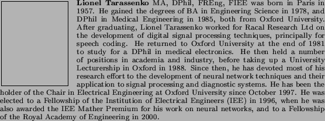
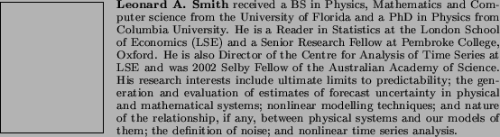

Next: About this document ...
Up: A dynamical model for
Previous: Acknowledgements
- 1
-
A. L. Goldberger and E. Goldberger,
Clinical Electrocardiography,
Mosby, St. Louis, 1977.
- 2
-
J. Pan and W. J. Tompkins,
``A real-time QRS detection algorithm,''
IEEE Trans. Biomed. Eng., vol. 32, no. 3, pp. 220-236, 1985.
- 3
-
D. T. Kaplan,
``Simultaneous QRS detection and feature extraction using simple
matched filter basis functions,''
in Computers in Cardiology. 1991, pp. 503-506, IEEE Computer
Society Press.
- 4
-
P. Davey,
``A new physiological method for heart rate correction of the QT
interval,''
Heart, vol. 82, pp. 183-186, 1999.
- 5
-
G. B. Moody, R. G. Mark, A. Zoccola, and S. Mantero,
``Derivation of respiratory signals from multi-lead ecgs,''
Computers in Cardiology, vol. 12, pp. 113-116, 1985.
- 6
-
G. B. Moody, R. G. Mark, M. A. Bump, J. S. Weinstein, A. D. Berman, J. E.
Mietus, and A. L. Goldberger,
``Clinical validation of the ecg-derived respiration (edr)
technique,''
Computers in Cardiology, vol. 13, pp. 507-510, 1986.
- 7
-
M. Malik and A. J. Camm,
Heart Rate Variability,
Futura Publishing, Armonk, NY, 1995.
- 8
-
A. L. Goldberger, L. A. N. Amaral, L. Glass, J. M. Hausdorff, P. Ch. Ivanov,
R. G. Mark, J. E. Mietus, G. B. Moody, C. K. Peng, and H. E. Stanley,
``Physiobank, physiotoolkit, and physionet: Components of a new
research resource for complex physiologic signals,''
Circulations, vol. 101, no. 23, pp. e215-e220, 2000.
- 9
-
P. J. Schwartz and Wolf S.,
``Q-T interval as predictor of sudden death in patients with
myocardial infarction,''
Circulation, vol. 57, pp. 1074-1077, 1978.
- 10
-
Task Force of the European Society of Cardiology, the North American
Society of Pacing, and Electrophysiology,
``Heart rate variability: standards of measurement, physiological
interpretation, and clinical use,'' 1996.
- 11
-
M. H. Crawford, S. Bernstein, and P Deedwania,
``ACC/AHA guidelines for ambulatory electrocardiography,''
Circulation, vol. 100, pp. 886-893, 1999.
- 12
-
S. Hales,
Statical Essays II, Haemastaticks,
Innings and Manby, London, 1733.
- 13
-
C. Ludwig,
``Beiträge zur Kenntnis des Einflusses der
Respirationsbewegung auf den Blutlauf im Aortensystem,''
Arch. Anat. Physiol., vol. 13, pp. 242-302, 1847.
- 14
-
R. W. De Boer, J. M. Karemaker, and J. Strackee,
``Hemodynamic fluctuations and baroreflex sensitivity in humans: a
beat-to-beat model,''
Am. J. Physiol., vol. 253, pp. 680-689, 1987.
- 15
-
W. H. Press, B. P. Flannery, S. A. Teukolsky, and W. T. Vetterling,
Numerical Recipes in C,
CUP, Cambridge, 2nd edition, 1992.
- 16
-
P. Laguna, G. B. Moody, and Mark R. G.,
``Power spectral density of unevenly sampled data by least-square
analysis: performance and application to heart rate signals,''
IEEE Trans. Biomed. Eng, vol. BME-45, pp. 698-715, 1998.
- 17
-
P. E. McSharry and L. A. Smith,
``Better nonlinear models from noisy data: Attractors with maximum
likelihood,''
Phys. Rev. Lett., vol. 83, no. 21, pp. 4285-4288, 1999.




2003-10-08